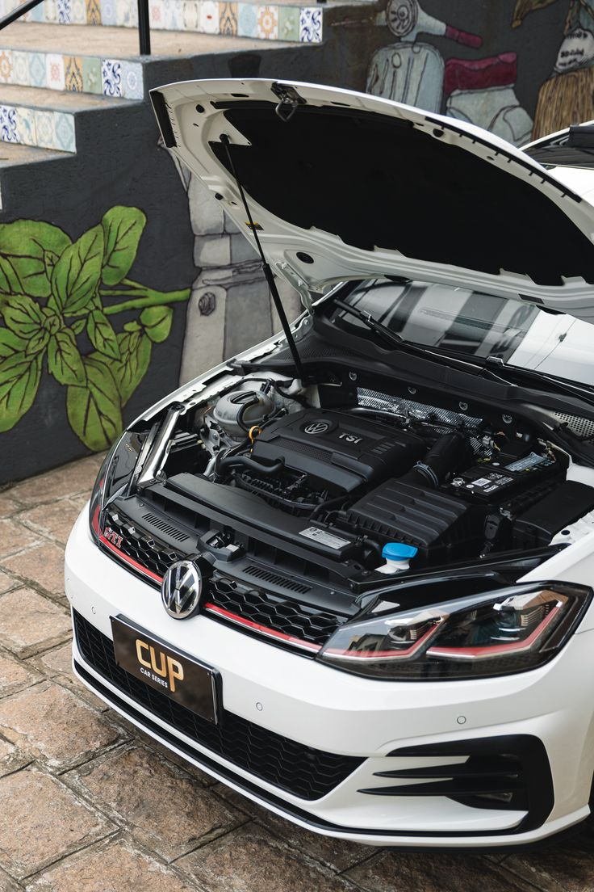

Volkswagen
Volkswagen Modifications
Volkswagen can be modified in many different ways.
Click on one of the modifications below to learn more.
Volkswagen can be modified in many different ways.
Click on one of the modifications below to learn more.

ECU chiptuning modifies the software in the Engine Control Unit (ECU) to adjust engine parameters such as fuel injection, ignition timing and turbocharger boost pressure (where applicable). This can improve engine performance when performed with a suitable calibration.
Do you want to do it yourself?
Here are the tools you're going to need:
Check the Volkswagen's model, engine type, production year and ECU version to establish which tuning solutions are compatible.
Connect an OBD-II scanner and check for existing engine faults before making modifications.
Connect the laptop, compatible programming interface and battery support unit to the vehicle.
Save the original ECU data so the vehicle can be restored to its factory configuration if necessary.
Choose a professionally developed tuning map designed specifically for the Volkswagen's engine and hardware.
Have a qualified tuner install the calibration using compatible programming equipment and the manufacturer's recommended procedure.
Perform diagnostic checks and controlled performance testing to verify that the engine operates safely.
Exhaust system modifications involve replacing or upgrading components of the vehicle's exhaust system to improve exhaust flow, change engine sound and enhance the vehicle's appearance.
Do you want to do it yourself?
Here are the tools you're going to need:
Park the Volkswagen on a flat surface, allow the exhaust to cool completely and secure the vehicle.
Use a suitable hydraulic jack and axle stands to provide safe access underneath the car.
Identify the existing muffler, pipes, catalytic converter and mounting points.
Loosen the appropriate connections and remove the exhaust hangers and sections being replaced.
Check that the new exhaust system matches the Volkswagen's model, engine and original mounting points.
Position the replacement sections, fit new gaskets and secure the connections using the specified hardware.
Make sure the exhaust does not touch the vehicle's body, suspension or other components.
Have the system checked for leaks, secure mounting and excessive noise before driving.
Wheels and suspension modifications improve the appearance, handling and driving characteristics of a Volkswagen.
Do you want to do it yourself?
Here are the tools you're going to need:
Check the Volkswagen's bolt pattern, wheel diameter, width, offset and centre bore.
Choose tyres with the correct dimensions, load rating and speed rating for the vehicle.
Park on level ground, secure the wheels and loosen the wheel nuts slightly.
Use a hydraulic jack and axle stands at the approved lifting points.
Unscrew the wheel nuts and carefully remove the wheels.
Position the replacement wheels and hand-tighten the wheel nuts.
Have the original suspension removed and compatible lowering springs or coilovers installed according to Volkswagen-specific service instructions.
Tighten the fasteners to the manufacturer's specified torque settings.
Inspect the clearance between the tyres, brakes, suspension and bodywork throughout steering movement.
Have the wheel alignment checked and adjusted by a professional.
Check tyre pressure, wheel security and suspension operation before driving.
Body modifications change the exterior appearance of a Volkswagen. They can give the vehicle a more aggressive, sporty or customised look.
Do you want to do it yourself?
Here are the tools you're going to need:
Select compatible exterior parts designed for the specific Volkswagen model and production year.
Clean the bodywork and remove dirt, grease and debris from the installation areas.
Carefully remove the original bumper, trim or other components if required.
Position the new body kit components and check that all mounting points and panel gaps align correctly.
Use masking tape and a measuring tool to identify the required attachment positions.
Secure the new parts using the supplied bolts, clips or approved automotive adhesive.
Attach compatible spoilers, diffusers, side skirts or other exterior accessories.
Clean the surface, position the vinyl and use a heat gun and squeegee to apply it smoothly.
Check that all components are firmly attached and that there are no sharp edges, loose panels or obstructed lights.
Verify that the modifications do not interfere with doors, wheels, sensors, visibility or vehicle safety systems.